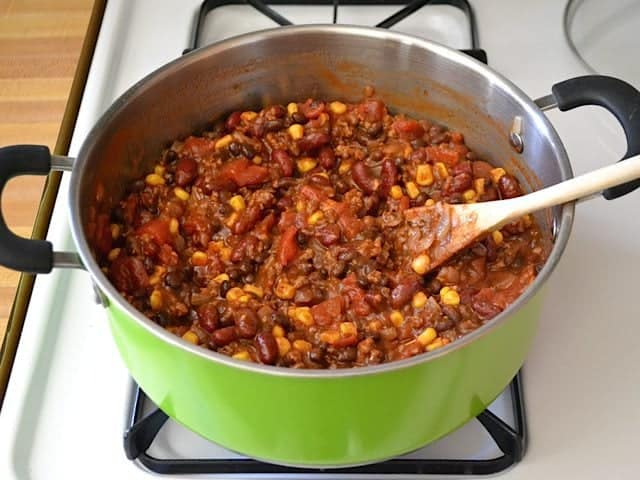

One Pot Chili Pasta

Description
This one pot chili pasta recipe will be a surefire hit at your next dinner. Reheatable, and budget friendly, this dish doesn't take long to make either.
- 1 Tbsp olive oil
- 1 yellow onion
- 2 cloves garlic
- 1/2 lb ground beef
- 2 Tbsp all purpose flour
- 2 Tbsp chili powder
- 1 15 oz can tomato sauce
- 1 15 oz can diced tomatoes
- 1 15 oz can black beans
- 1 15 oz can kidney beans
- 1 cup frozen corn kernels
- 2 cups uncooked elbow macaroni
- 2 cups beef or chicken broth
- 1 cup shredded cheese
- Dice the onion and mince the garlic. Cook both in a large pot with olive oil over medium heat for 1-2 minutes, or until
soft and transparent. Add the ground beef and continue to stir and cook until it is fully browned. If using a high fat
ground beef, drain off the excessive after it is browned.
- Add the flour and chili powder to the pot and stir to coat the meat. Continue to stir and cook the coated meat for 1-2
minutes more. The flour and chili powder may coat the bottom of the pot, but that's okay. Just be careful to not let it
burn.
- Drain and rinse the black and kidney beans. Add the beans, tomato sauce, diced tomato, and corn kernels to the pot. Stir
well and dissolve the flour/chili powder mixture from the bottom of the pot.
- Add the dry macaroni and two cups of beef broth to the pot and stir to combine. Place a lid on top, turn the heat up to
high, and let the pot come to a boil. Once it reaches a boil, give it a quick stir to loosen any pasta stuck to the
bottom of the pot, replace the lid, and turn the heat down to medium-low. Let the pot simmer on medium-low for about 15
minutes, or until the pasta is soft and has absorbed most of the liquid. Stir the pot one or two times during the 15
minutes to loosen any pasta stuck to the bottom.
- Once the pasta is fully cooked, turn the heat off and add the cheese. Stir the cheese into the pasta until it has melted
in and become slightly creamy. Serve hot.
home